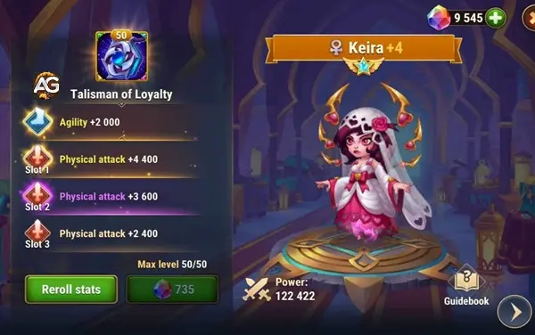
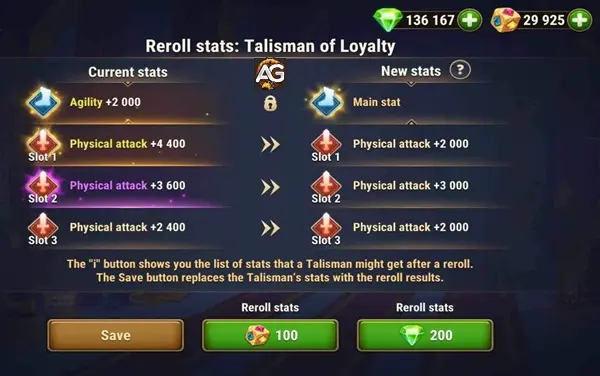

Os talismãs em Hero Wars Mobile são itens essenciais para elevar o poder dos heróis, obtidos exclusivamente em eventos especiais. Cada herói possui um talismã único que aumenta suas estatísticas e habilidades, transformando a dinâmica de combate.
Atualmente, garantir talismãs dentro do reino da Aliança Heroica de Hero Wars Mobile permanece um assunto exclusivo, relegado apenas aos confins de eventos especiais. No entanto, o futuro reserva possibilidades tentadoras, sussurrando rumores de vias alternativas para aquisição de talismãs além desses encontros exclusivos.
Poderia ser que o fascínio enigmático dos talismãs transcenda os limites de eventos esporádicos, talvez para abençoar nossos heróis através de festividades recorrentes? A resposta permanece envolta em incerteza, velada pelo enigma do que está por vir.
Para aventureiros iniciantes e campeões experientes, a busca por talismãs permanece um anseio não realizado, um farol de potencial inexplorado esperando para iluminar sua jornada. Uma promessa paira no ar, ecoando o sentimento de que em breve, os elusivos talismãs encontrarão o caminho para as mãos daqueles que os buscam ardentemente.
Assim, é com esperança antecipada que aguardamos as criações engenhosas dos desenvolvedores, criando caminhos para que os desprovidos de talismãs possam conquistar seus tesouros cobiçados e enriquecer suas empreitadas heroicas.
Ilustração de Tutorial dos Talismãs em Hero Wars Alliance, um jogo desenvolvido pela Nexters.
Como Obter Talismãs em Hero Wars
Para desbloquear todo o potencial do seu talismã, o personagem deve alcançar o ápice de sua força: o nível 120. Nesse marco, ocorre uma transformação, onde a experiência do personagem é convertida automaticamente para fortalecer o talismã, permitindo que ele alcance seu nível máximo de 50.
Embarcar na jornada para aprimorar seu talismã exige a aquisição do artefato exclusivo e único de seu personagem. Cada herói dentro das ilustres fileiras da Aliança Heroica de Hero Wars possui um talismã feito sob medida para suas habilidades, concedendo pontos de estatísticas adicionais para fortalecer sua destreza no campo de batalha.

Keira com Talismã da Lealdade em Hero Wars Mobile
Guia Completo para o Segundo Talismã em Hero Wars Alliance
A introdução do segundo talismã em Hero Wars Alliance revolucionou o jogo, oferecendo aos jogadores novas opções estratégicas. Diferente das skins, que não impactam as estatísticas dos heróis durante a batalha, os talismãs alteram diretamente o poder e as estatísticas de um herói. Isso torna a escolha do talismã certo crucial, pois ele pode melhorar ou prejudicar o desempenho do seu herói.
Pontos Principais a Lembrar:
Uso de Um Único Talismã: Você só pode equipar um talismã por vez. Escolher o talismã certo para ataque ou defesa é fundamental para otimizar o desempenho do seu herói.
Mudanças Estatísticas: Os talismãs alteram as estatísticas do seu herói, incluindo seu poder total. Essas mudanças podem ser significativas e impactar sua estratégia de batalha.
Pontos de Poder Exclusivos: Os pontos de poder do talismã não se acumulam. Priorize a atualização de um talismã por vez para maximizar seu potencial, pois alcançar o nível máximo (50) requer um número significativo de cristais de maestria raros.
Exemplos de Talismãs:
Talismãs do Dante:
Talismã da Alma: Concede ataque físico, armadura e chance de acerto crítico. Ideal para ofensiva.
Talismã de Retaliação: Fornece ataque físico e esquiva. Melhor para defesa e resistência.
Heróis Disponíveis:
Os primeiros heróis a receberem o segundo talismã são Dante, Heidi, e Chabba.
Todos os outros heróis já possuem seu primeiro talismã.
Sugestão: Caros seguidores de AlexandreGames, fiquem atentos aos nossos guias sobre os novos talismãs de cada herói. Nossos guias irão ajudá-lo a determinar quais talismãs estão mais bem equipados para defesa e ataque. Não perca as estratégias mais recentes para maximizar o potencial dos seus heróis!
Dicas de Estratégia:
Escolhendo o Talismã Certo: Considere o papel do seu herói e a situação de batalha. Talismãs ofensivos aumentam o dano, enquanto os defensivos melhoram a sobrevivência.
Atualize com Sabedoria: Foque em um talismã por vez para aproveitar ao máximo seu potencial. Se distribuir recursos, não atingirá o poder total rapidamente.
Visão Geral do Segundo Talismã
O segundo talismã de cada herói traz melhorias únicas que aprimoram seus papéis no campo de batalha, oferecendo uma mistura de aumentos ofensivos e defensivos. Os jogadores devem escolher os talismãs com base em seu estilo de jogo e composição de equipe, garantindo que maximizem o potencial de cada herói. Os segundos talismãs geralmente fornecem aprimoramentos mais especializados, tornando-os adições valiosas ao arsenal de qualquer jogador em Hero Wars.
Este guia deve ajudar você a entender a importância do segundo talismã e como usá-lo de forma eficaz. Equipe seus heróis com os melhores talismãs e domine o campo de batalha!
Domando Talismãs: Subindo para Alcançar um Poder Inigualável
Elevar seu talismã a maiores alturas exige a aquisição de cristais de maestria. Atualmente, esses cristais elusivos só podem ser obtidos durante eventos especiais, embora o futuro possa anunciar o advento de novos tipos de eventos e missões para ampliar sua disponibilidade.
Para elevar o talismã de um personagem de um nível humilde de 0 ao pináculo de 50, é necessário um total surpreendente de 18.375 cristais de maestria. No entanto, adquirir esses recursos preciosos prova ser uma tarefa hercúlea, envolta em desafio e adversidade.
Ao embarcar nesta jornada árdua rumo à maestria talismânica, deixe a perseverança ser sua luz guia. Embora o caminho possa estar repleto de obstáculos, as recompensas que aguardam aqueles que se atrevem a avançar não são nada menos que lendárias.
Redefinindo a Forja de Talismãs: Sorterar o Atributo Perfeito
No reino da Aliança Heroica de Hero Wars, os talismãs se destacam como faróis de poder, cada um possuindo um slot de estatística principal transbordando com 2000 pontos de Força, Agilidade ou Inteligência—adaptados à essência única da classe de seu portador. No entanto, é dentro do abraço enigmático de seus três slots de estatísticas especiais onde reside o verdadeiro potencial desses artefatos, oferecendo uma variedade de aprimoramentos que vão desde destreza física até maestria arcana.

Reroll de Talismã em Hero Wars Alliance
Adentre o reino da Rerrolagem de Talismãs, uma arte conhecida por poucos, mas cobiçada por todos. Dentro dessa prática arcana reside a habilidade de remodelar e refinar a essência de seu talismã, desbloqueando seu pleno potencial. O processo não é para os fracos de coração, pois exige a aquisição de Metacubos, artefatos de poder elusivos, ou o gasto de preciosas esmeraldas.
Para obter Metacubos em Hero Wars, você precisa se juntar ao Porto, onde o desafio está na emocionante Batalha dos Capitães. Este evento testa suas habilidades estratégicas e trabalho em equipe enquanto você compete contra oponentes formidáveis.
Para mais informações detalhadas e dicas sobre como se destacar nesse desafio, por favor, visite nossa página dedicada ao Guia do Porto em Hero Wars. Lá, você encontrará guias abrangentes, estratégias e atualizações para ajudá-lo a dominar o jogo.
Conclusão do Guia do Talismã
Em conclusão, a jornada para obter e dominar talismãs em Hero Wars é repleta de mistério, desafio e potencial ilimitado. Conforme os aventureiros embarcam nessa busca, eles se deparam com a promessa de desbloquear um poder incomparável e aprimorar as habilidades de seus heróis no campo de batalha.
Desde a aquisição elusiva de talismãs até o processo intricado de aumentá-los de nível e refinar seus atributos, cada passo é um testemunho da dedicação e perseverança necessárias para ter sucesso. O fascínio desses artefatos ancestrais transcende meras estatísticas, oferecendo um vislumbre de um reino onde lendas são forjadas e destinos são moldados.
Conforme os heróis navegarem pelos desafios de Hero Wars, que eles abracem a sabedoria obtida deste guia e tracem seu caminho com confiança. Pois dentro das profundezas de seus talismãs está a chave para desbloquear seu verdadeiro potencial e ascender à grandeza.
Que suas jornadas sejam repletas de triunfos, suas batalhas sejam lendárias e seus talismãs sejam um farol de força diante da adversidade. E lembrem-se, no mundo em constante evolução de Hero Wars, a busca pela glória não conhece limites.
Você gostou do nosso Guia do talismã? Há algo que não entendeu ou gostaria de sugerir mudanças? Convidamos você a se juntar à nossa sessão de comentários na página do Alexandre Games Blog. Não hesite em expressar sua opinião, clarificar suas dúvidas e compartilhar sua sugestões. Clique no botão abaixo para começar: